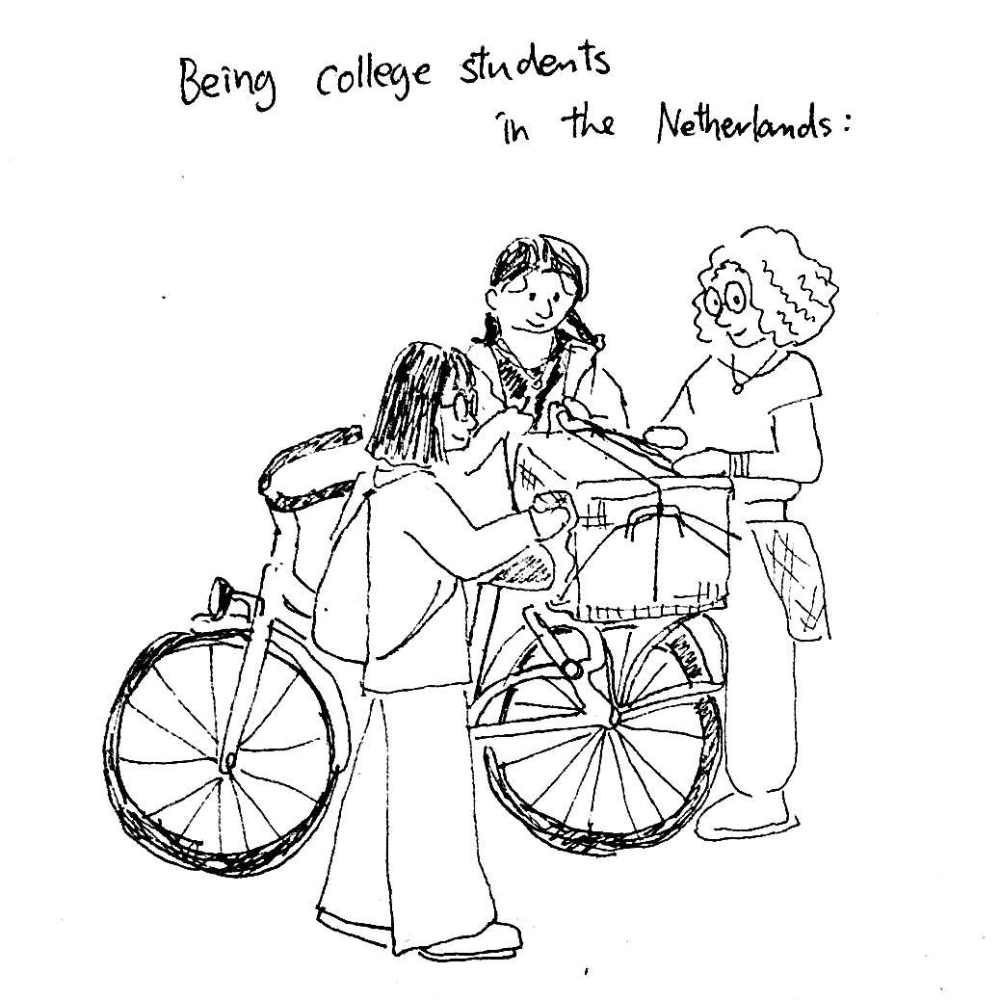

Vector map

Historical castles in Utrecht and their reachability (click map to zoom)
The process of making this map started by importing data from Open Street Map, a free and open map created by volunteers around the world. For this project, I chose to analyze the locations of castles in Utrecht and their reachability with bikes. The downloaded data was cleaned so that only the necessary information remained and transformed into point data. Next, I introduced an algorithm called Open Route Service. With this tool, I was able to simulate how much time it will take when biking from the castle. As a result, we can observe the castles surrounding the city of Utrecht. They are distanced from each other’s in about 5 to 15 minutes biking time. This map can be used for tourism purposes. National and international visitors can visit castles by biking; in this way, they can both explore Dutch heritage and embody Dutch culture at the same time. This map can be used to decide on a trip itinerary because it shows which castles are nearby, not just by direct distance but also by commuting time.

